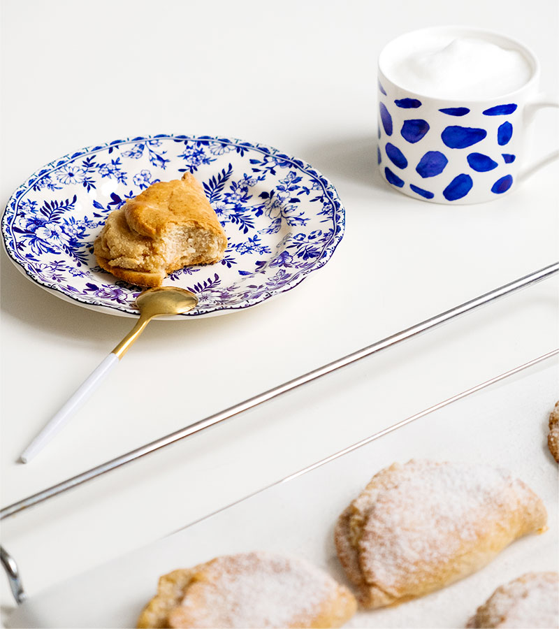

<main class="home-section common-color ">
    <div class="d-flex">
        <div class="Traditional-image overflow-hidden">
            
        </div>
        <div class="text-section d-flex flex-column  p-5">
            <h1 class="text-primary-color">Traditional & Modern</h1>
            <span class="fs-4 pt-3 text-secondary-color">
                Traditional & Modern Donec rutrum in justo eget. In porta nisi fringilla arcu, ac vulputate dui tempor et.
            </span>
            <span class="text-secondary-color fs-5 py-5">
                Quis lectus nulla at volutpat diam ut. Mollis aliquam ut porttitor leo a diam, suspendisse, potenti
                nullam ac tortor vitae purus faucibus ornare. Curabitur vitae nunc sed velit dignissim sodales ut. Quam nulla porttitor massa id neque aliquam. Id leo in vitae turpis massa sed diam vel quam elementum
                cursus in
            </span>
            <span class="text-secondary-color f fs-5 pb-4">
                Volutpat maecenas volutpat. Iaculis at erat pellentesque adipiscing.  Praesent tristique magna sit amet purus gravida quis blandit turpis egestas pretium.
            </span>
            <div>
                <button class="btn btn-primary text-uppercase mt-5">taste perfection</button>
            </div>
        </div>
    </div>
</main>